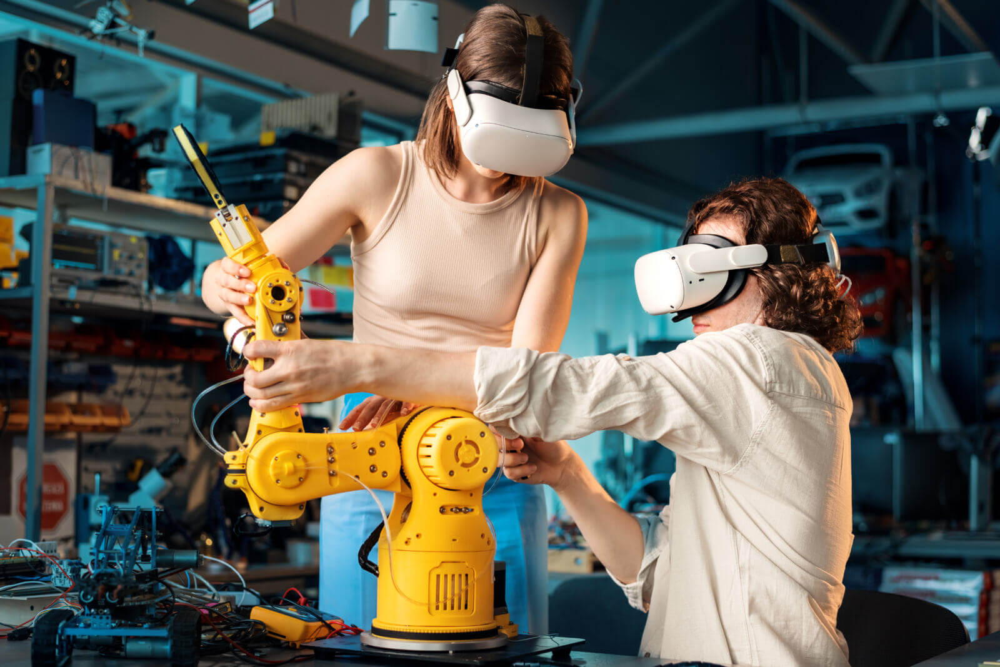

Industria
Los robots automatizan líneas de producción, manipulan materiales y realizan tareas repetitivas con gran precisión.
Los robots colaboran con las personas en áreas donde se necesita precisión, resistencia y nuevas formas de explorar el mundo.

Los robots automatizan líneas de producción, manipulan materiales y realizan tareas repetitivas con gran precisión.

La robótica ayuda en cirugías, rehabilitación, diagnóstico y asistencia a pacientes para mejorar su calidad de vida.
Los robots educativos convierten la programación y la ciencia en experiencias prácticas, creativas y colaborativas.

Los robots estudian planetas y ambientes extremos, y permiten investigar lugares donde las personas no pueden llegar.
Conocer más